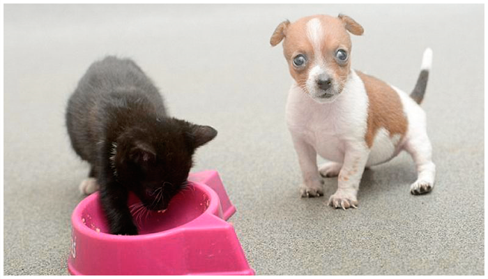

Роды. Что делать?
Домашний питомец – искренний повод для радости. Собаки, кошки и другие любимцы создают неповторимо теплую, живую атмосферу в доме. Как и всякие живые существа, наши братья меньшие с удовольствием дарят себе и хозяевам радость новой жизни. Появление животика у всеобщей четвероногой любимицы означает скорое прибавление в Вашем семействе. Вы к этому готовы?
Готовимся стать акушером у домашних любимиц
Начнем с того, что делать во время беременности. Во-первых, меняем и дополняем рацион будущей мамаши. Корма, богатые кальцием, витаминами с повышенной энергетической ценностью – лучший вариант. Если Вы предпочитаете кормить питомца натуральной пищей, добавляйте в миску для еды витамины и минералы, предварительно узнав верный состав у ветеринара-диетолога. Чем ближе роды, тем выше должна быть забота о четвероногой роженице. Перед непосредственным началом (за день или два), животное может перестать питаться вовсе, но это нормально.
Что требуется от хозяев? Чистое место (коробка или ящик с одноразовой пеленкой на дне), аптечка, полотенца, спирт с нейлоновой ниткой и ножницами, маленькую пипетку. Шприцы с иголками, вата и зеленка – обязательный набор. В наступлении дня «ИКС» старайтесь успокоить животное, заранее попытайтесь уговорить будущую хвостатую маму улечься в «родильном отделении». После того, как малыши появятся на свет, можно аккуратно, пипеткой удалить жидкость изо рта и носа каждого детёныша. Оботрите шерстку и подсуньте под мордочку счастливой роженицы. Если есть возможность, или опасения насчет трудных родов, обращайтесь в «Baskerville» - мы поможем Вашей любимице стать мамой без риска для жизни детенышей или здоровья самочки.
